cooking
Bolognese
Sunday May 15, 2022
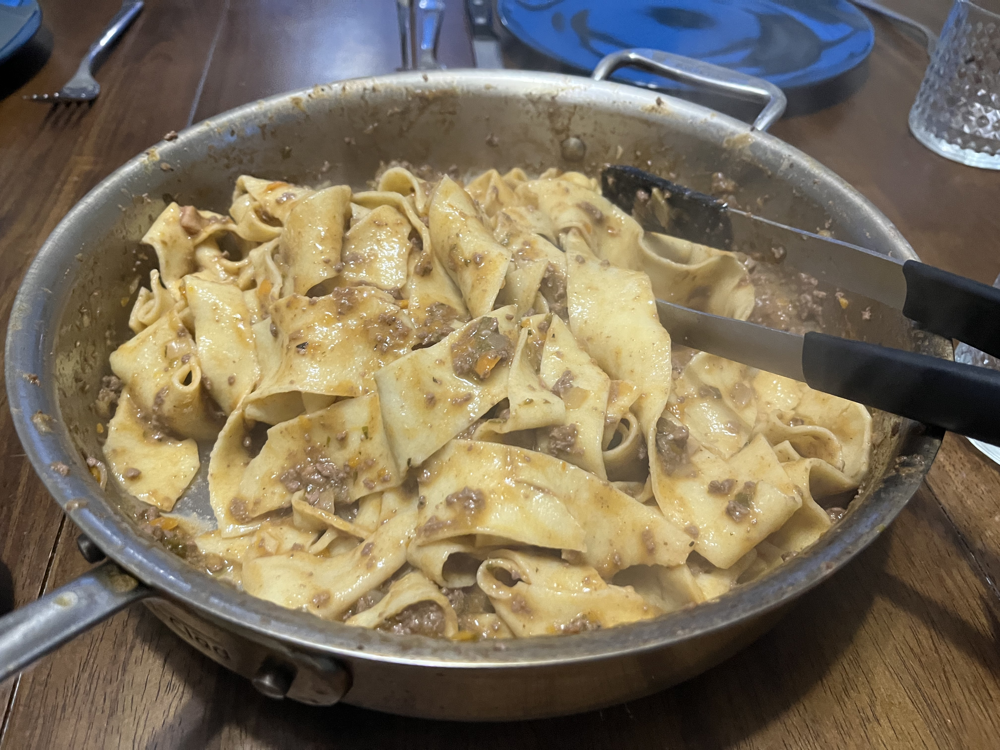
See a step by step breakdown of the cooking below.
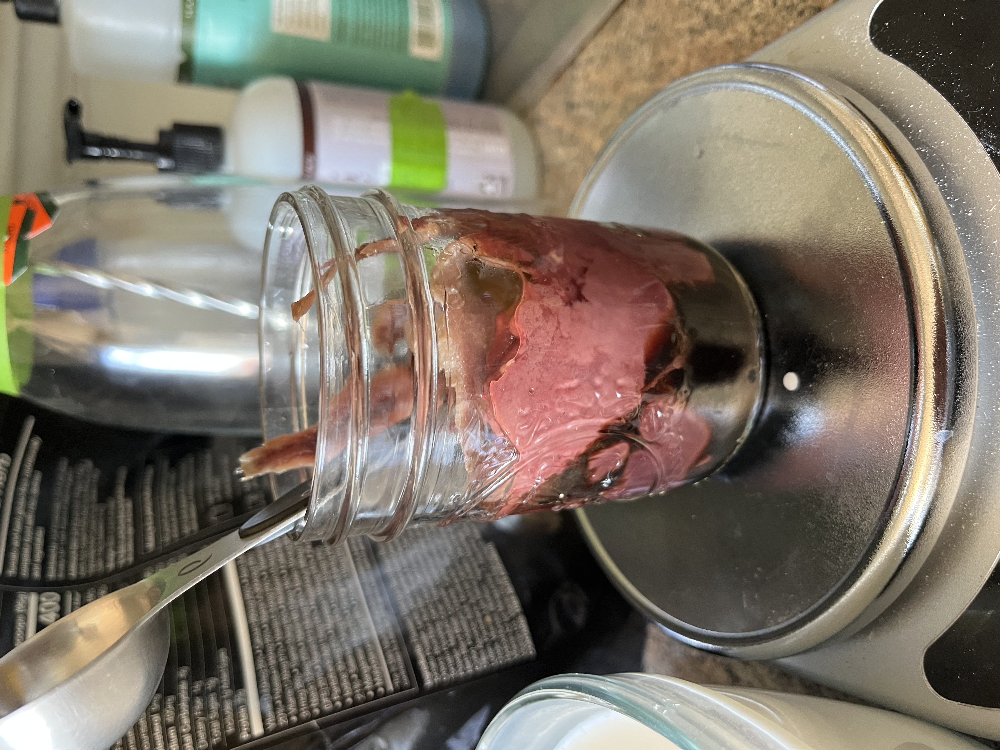
ingredients: chicken liver, anchovies, soy sauce
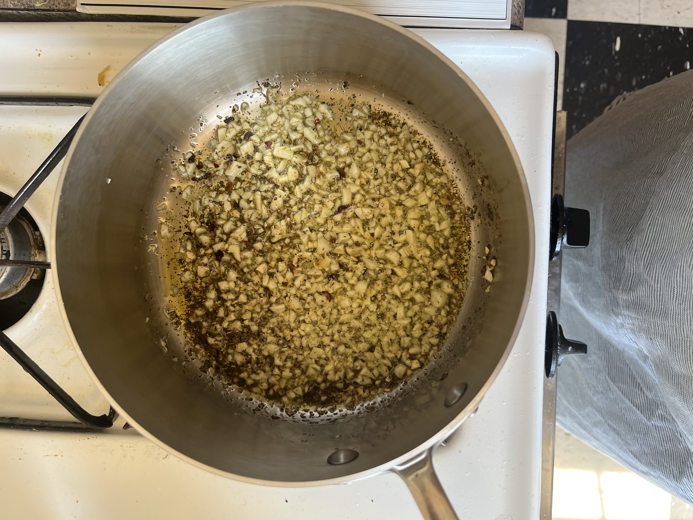
ingredients: garlic
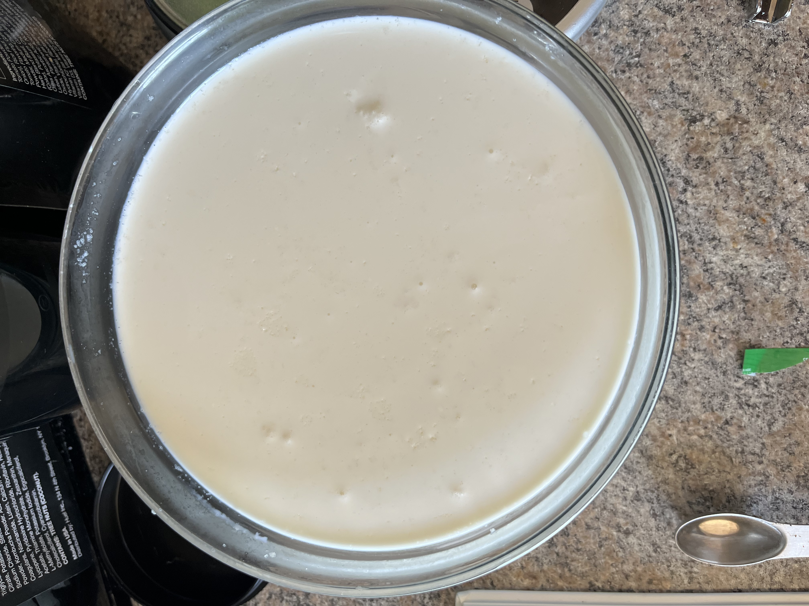
ingredients: milk, heavy cream, chicken stock, gelatin
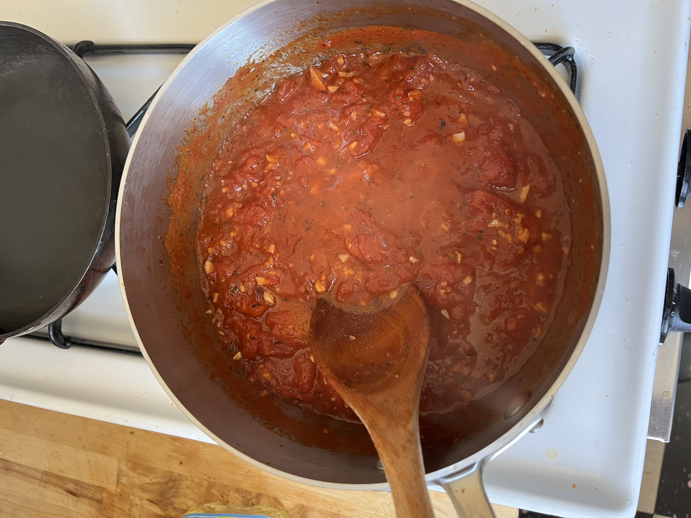
ingredients: tomatoes, garlic, chile flakes
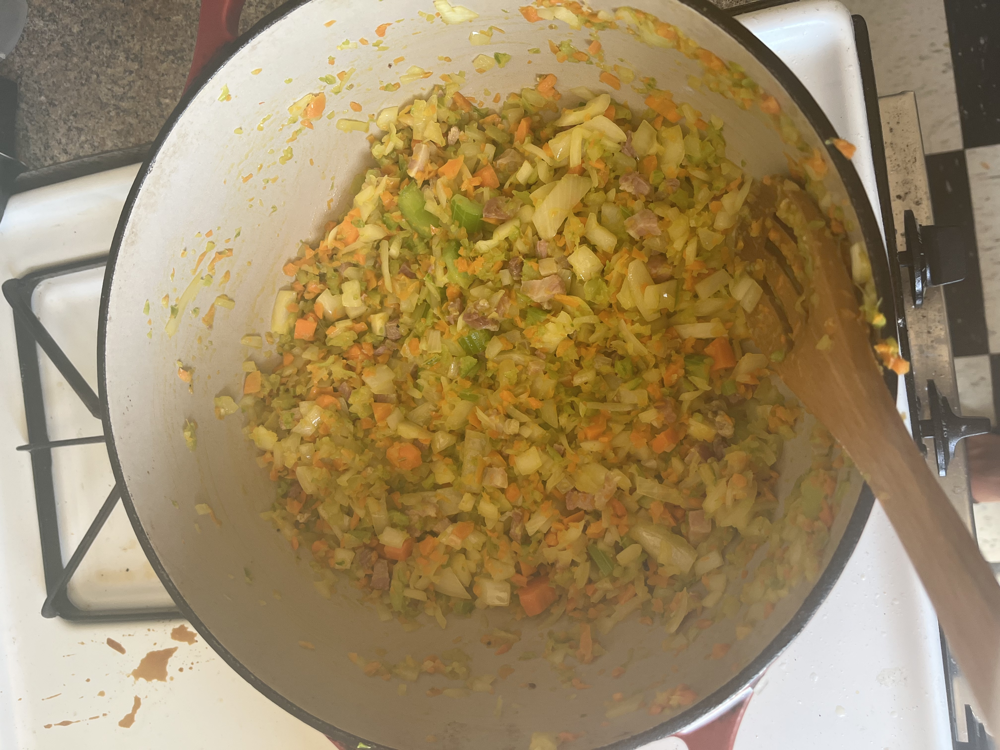
ingredients: onions, carrots, tomatoes
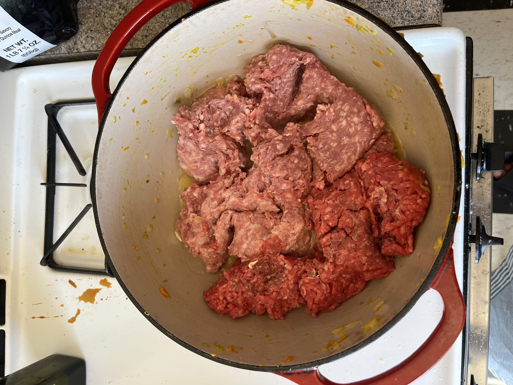
ingredients: ground beef and ground lamb

cooking the meat
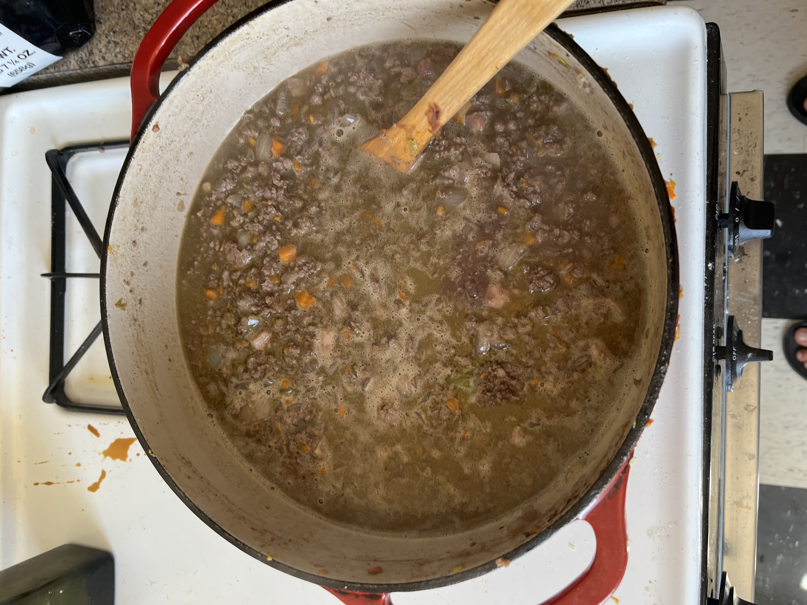
adding the liquid

almost everything is in the pot, now time to slow-cook
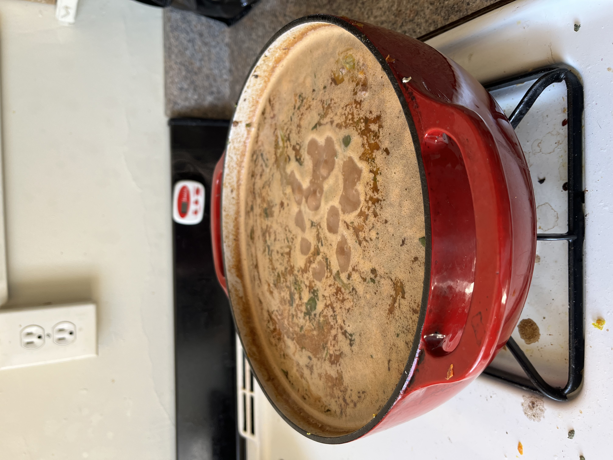
simmering, note the line of the liquid
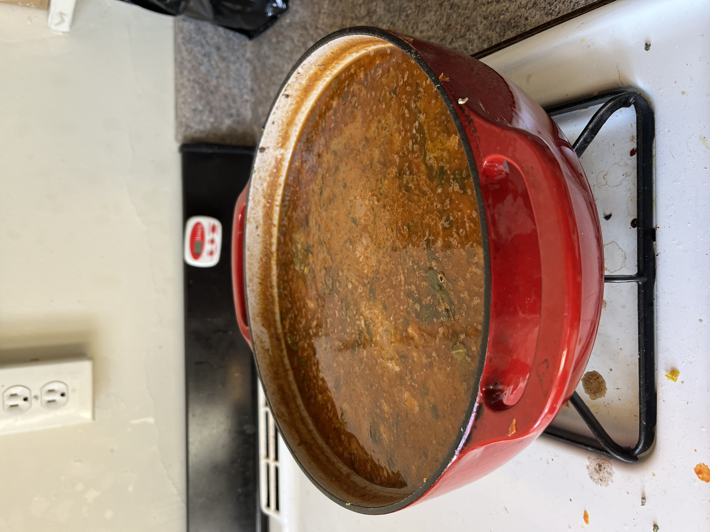
still simmering two hours later, note the line of the liquid
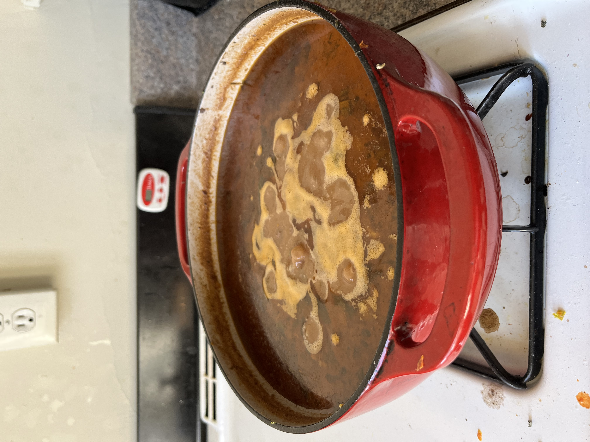
four hours later, see the layer of fat floating at the top